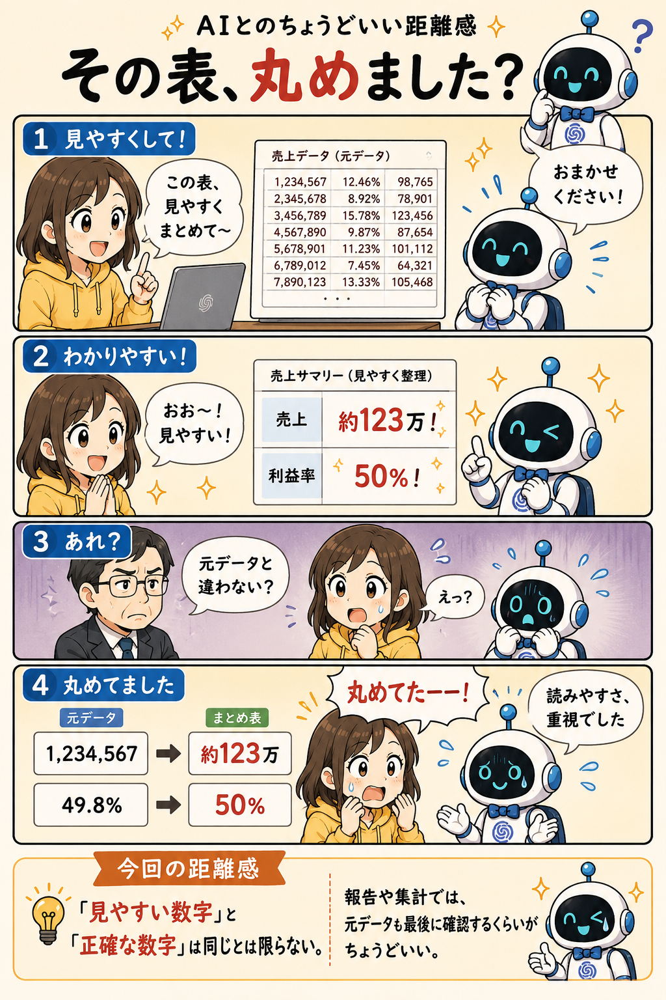

#026
その表、丸めました？
見やすくなったけど、正確さもちょっと削れてました。

メモ
表や集計結果をAIに渡して、「見やすくまとめて」と頼むことがあります。
数字が並んだ表は、そのままだと少し読みにくい。だからAIに整理してもらう。ここまではよくある使い方です。
するとAIは親切なので、桁区切りを整えたり、単位をそろえたり、小数点を丸めたりします。
「1,234,567 → 約123万」 「49.8% → 50%」 「12.46 → 12.5」
確かに見やすい。むしろ前より分かりやすい。
でも、ここで少し注意が必要です。
AIは数字が苦手だから間違えたわけではなく、「読みやすく整理しよう」として数字を加工していることがあります。
普段の会話なら問題ないかもしれません。でも報告資料や比較表、集計結果になると話は別です。
「だいたい同じ」では困る場面もある。
しかも数字は文章より厄介です。
文章なら違和感に気付きやすい。でも数字は、それっぽく並んでいると正しく見えてしまうことがあります。
AIが整理してくれた数字を見る時は、「見やすくなったか」だけでなく、「元データと同じか」も一度確認しておくと安心です。
今回の距離感
「見やすい数字」と「正確な数字」は、同じとは限らない。報告や集計に使う時は、最後に元データと見比べるくらいがちょうどいい。